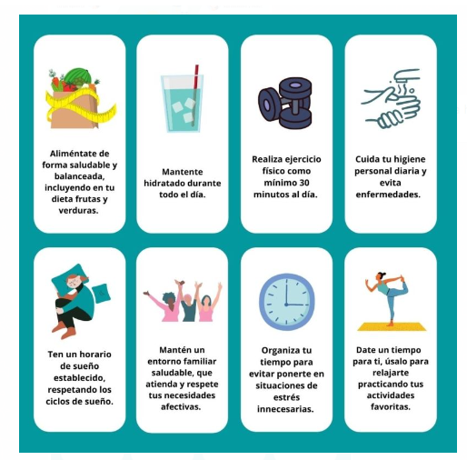

Tips de autocuidado
- Realizar actividades físicas (bailar, caminar, entre otras)
- Tomar descansos durante el día.
- Tener una rutina de sueño
- Practicar la gratitud
- Agregar actividades relajantes (ver una pelicula, meditar, escuchar podcast)
- Mantener contacto con familiares o amigos
- Establecer propósitos ( Ej: trabajo para estudiar, por un viaje, por una actividad de mi agrado, entre otros)
